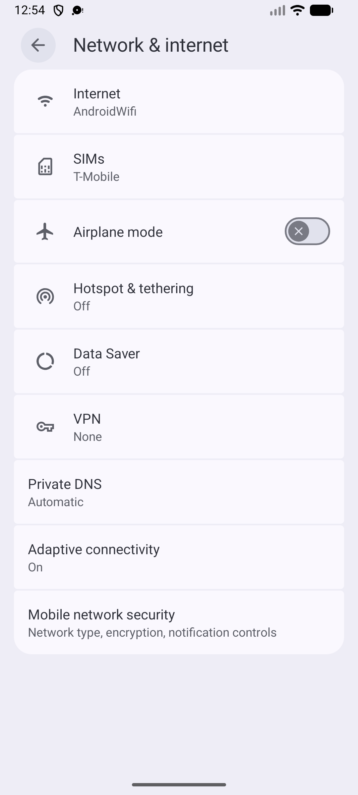
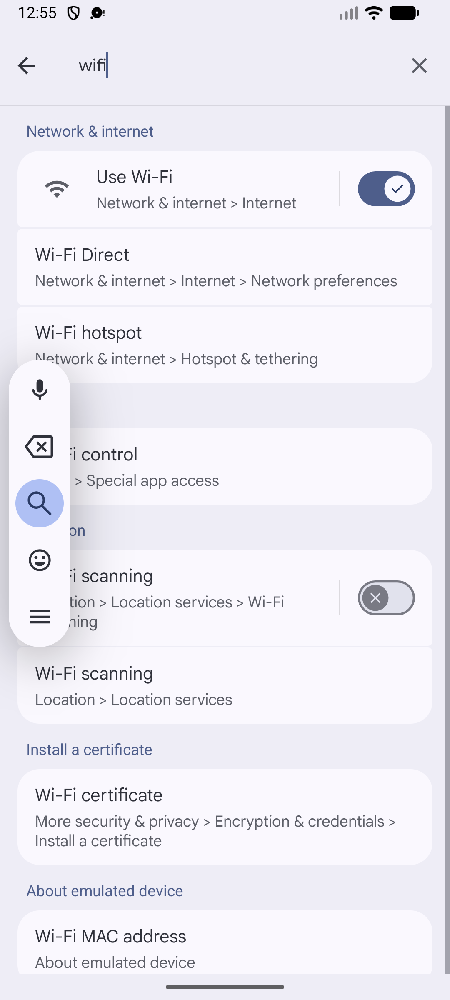
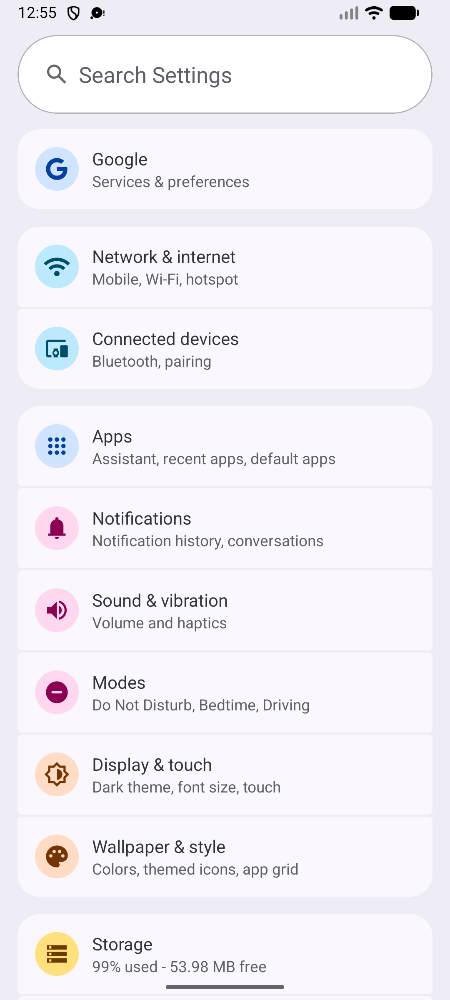

Teesri Nazar · sample-report
com.android.settings 16 (36) · sdk_gphone64_arm64 (emulator-5554) Android 16
· 2026-10-19T19:24:52.832Z · 14s
Request: plan sample.plan
3pass
0fail
0blocked
0skipped
checks 4/4 passed
| Case | Title | Result | Checks | Reason |
|---|---|---|---|---|
| TC-01 | Network & internet opens | pass | 2/2 | |
| TC-02 | Search finds Wi-Fi settings | pass | 1/1 | |
| TC-03 | Back from search returns to Settings | pass | 1/1 |
Details
pass TC-01 Network & internet opens · 3 steps 4s
- ✅ [ui] "Internet" is visible
- ✅ [ui] "Search Settings" is visible



pass TC-02 Search finds Wi-Fi settings · 3 steps 6s
- ✅ [ui] ~"Wi-Fi" is visible


pass TC-03 Back from search returns to Settings · 2 steps 1s
- ✅ [ui] "Search Settings" is visible


Navigation map
map: learned 1 step(s) and 0 name(s) for com.android.settings